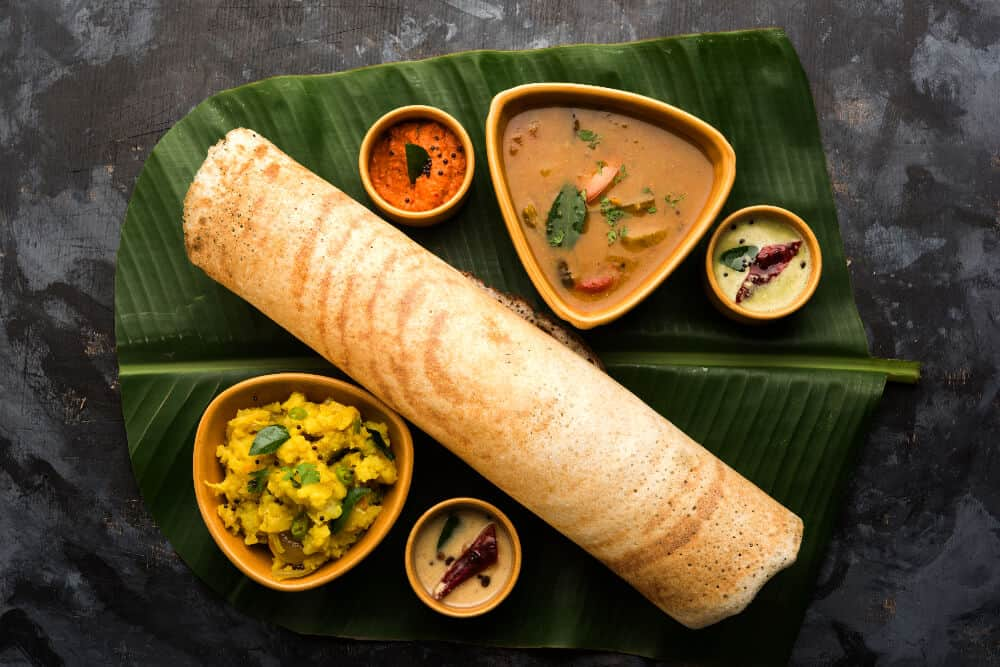

INDIAN FOOD
A dosa is a thin savory pancake in South Indian cuisine made
from a fermented batter of ground black lentiles and rice.
Dosas is a signature dish of South India and Sri Lanka.
from a fermented batter of ground black lentiles and rice.
Dosas is a signature dish of South India and Sri Lanka.

INDIA GATE
At the center of New Delhi stands the 42m high India Gate,
an "Arcde-Triomphe" like archway in the middle of a crossroad. Almost
similar to its French counterpart, it commemorates the 70,000 Indian soldiers
who lost their lives fighting for the British Army during the World War 1.
an "Arcde-Triomphe" like archway in the middle of a crossroad. Almost
similar to its French counterpart, it commemorates the 70,000 Indian soldiers
who lost their lives fighting for the British Army during the World War 1.